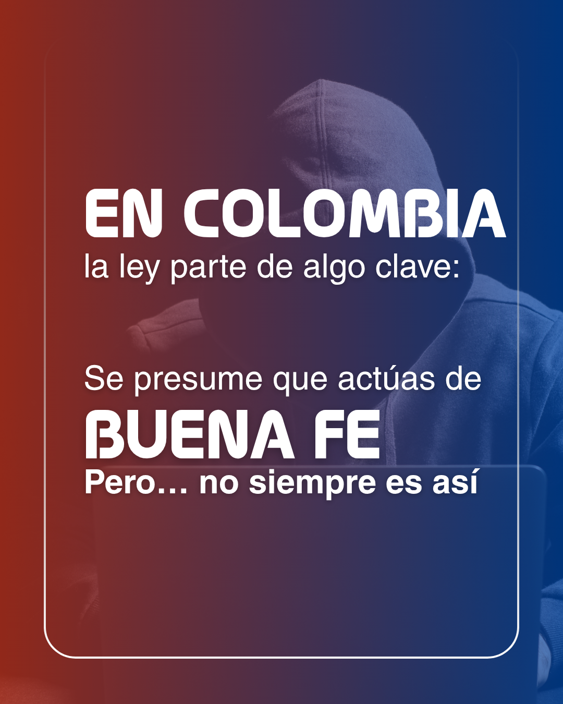
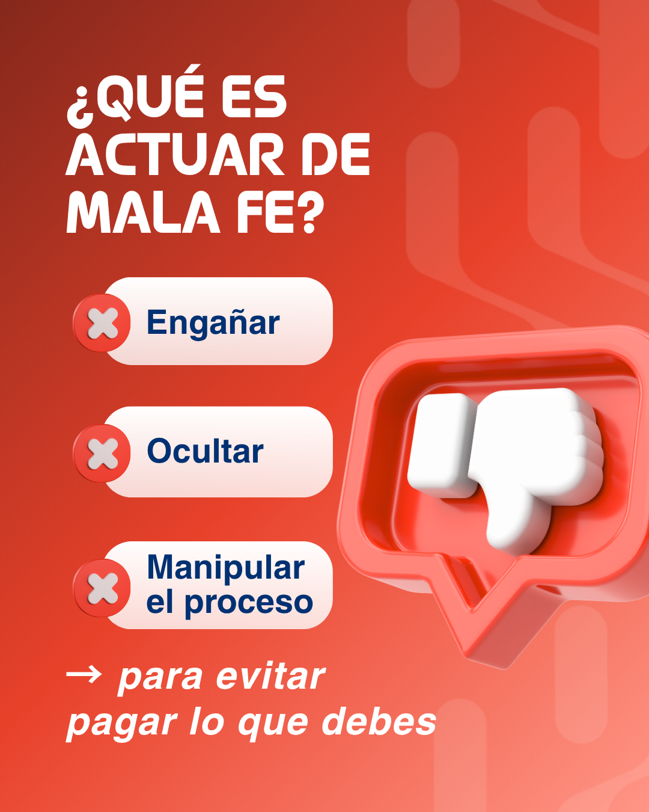
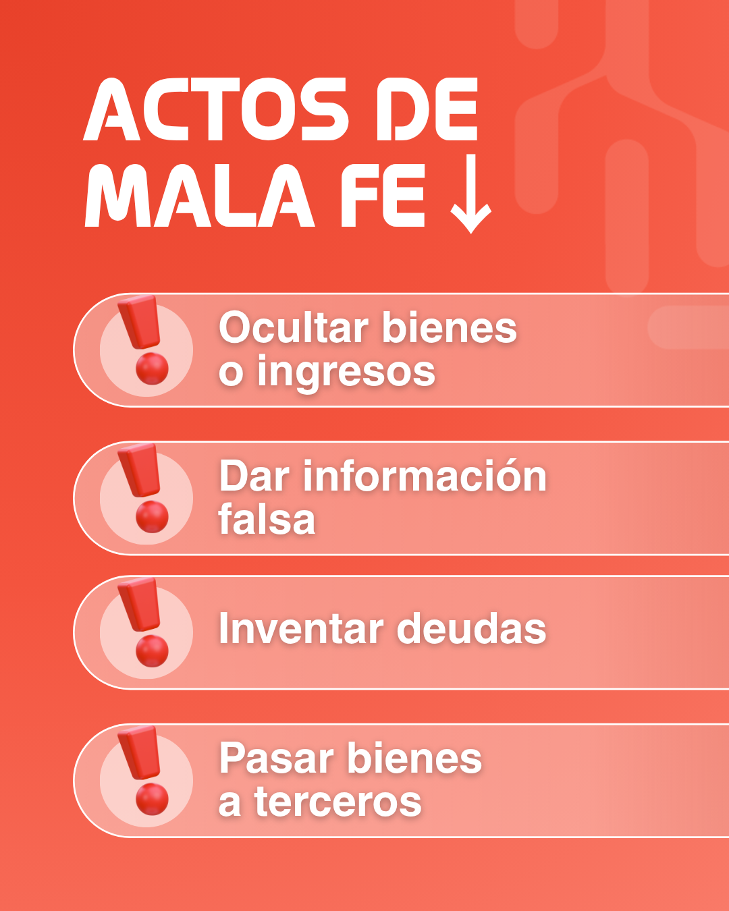
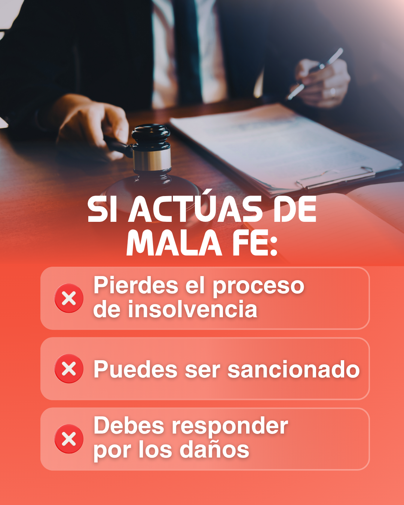
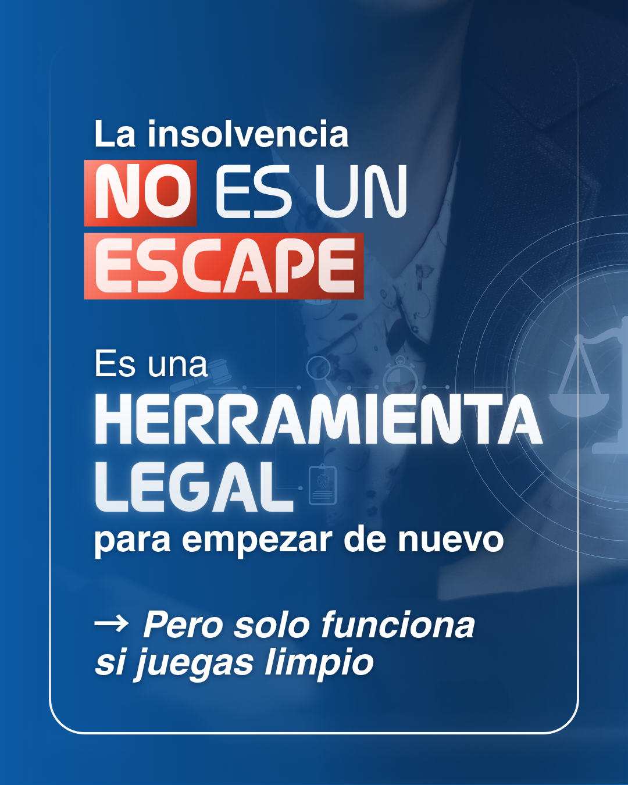

ATRIA Consultoría Legal y Financiera S.A.S
Design
System
ATRIA.
Guía de identidad visual, voz y componentes para redes sociales y web. La ley es el camino correcto. La mala fe es la trampa.
ATRIA Consultoría Legal y Financiera S.A.S
Guía de identidad visual, voz y componentes para redes sociales y web. La ley es el camino correcto. La mala fe es la trampa.
Contenido
01 · La marca
ATRIA acompaña a colombianos sobreendeudados en el proceso de insolvencia de persona natural no comerciante: un proceso legal, supervisado por un juez, para reorganizar las deudas y empezar de nuevo.
La marca habla desde un registro legal y popular: rigurosa con la norma, pero dirigida a personas comunes que atraviesan un problema, en español directo y urgente.
Azul · navy
Autoridad y tranquilidad. "Conocemos el sistema, déjanos ayudarte." Cubre el 60–70 % de cada pieza.
Rojo · red
Advertencia y confrontación. "No hagas esto o vas a perder." Cuando el tema cambia a lo incorrecto, todo el fondo pasa a rojo.
Términos precisos, explicados en palabras simples.
Cada slide lleva una afirmación y un matiz. Nada más.
El color no decora: dice si algo está bien o mal.
02 · Voz y tono
Español colombiano, informal y directo, escrito para personas con problemas financieros y sin formación legal.
| Superficie | Tono |
|---|---|
| Azul | Autoridad, calma, guía |
| Rojo | Advertencia, confrontación |
| Dorado | Palabra clave, cierre, CTA |
Insolvencia · buena fe / mala fe · proceso · deudas · acreedores · sancionado · evadir pagos · herramienta legal · empezar de nuevo.
La insolvencia no es dejar de pagar
y usarla mal puede salirte muy caro…
No es un escape. Es una herramienta legal
→ Pero solo funciona si juegas limpio.
03 · Logotipo
Tres piezas: el monograma (la "A" de circuito), el wordmark y el sello circular. Cada una tiene versiones de color para fondos claros, oscuros y contextos premium.


| Contexto | Versión | Archivo |
|---|---|---|
| Navegación web, documentos en fondo claro | Wordmark rojo | atria-wordmark-red.png |
| Pie de página, superficies navy | Sello navy | atria-badge-navy.png |
| Avatar, favicon, marca de agua | Monograma | atria-icon-navy-red.png |
| Certificados, sellos, piezas premium | Versiones doradas | atria-badge-gold.png |
04 · Color
Siete colores ancla tomados del brand-sheet oficial. Son la fuente de verdad: todas las escalas derivan de ellos.
El dorado es escaso: solo en el sello oficial y en la palabra clave del CTA. En piezas de "mala fe" la proporción navy/rojo se invierte.
| Token | Valor | Uso |
|---|---|---|
| --fg-1 | ink #0E1422 | Texto principal sobre claro |
| --fg-2 / --fg-3 | steel 700 / 500 | Texto secundario, pies de foto |
| --bg-page | paper #F7F8FA | Fondo de página web |
| --bg-navy | navy 900 | Hero, secciones oscuras |
| --accent-warn | red 500 | Advertencias, "mala fe" |
| --accent-cta | red 400 | Botón principal, hover |
| --accent-premium | gold 500 | Palabra clave, sello |
| --accent-link | navy 500 | Enlaces |
| --border-soft | rgba(255,255,255,.18) | Marco interior sobre oscuro |
04 · Color · 05 · Degradados
★ = color ancla del brand-sheet. Los demás pasos son tintes y sombras derivados para degradados y estados.
Los fondos nunca son planos: hasta el "navy sólido" lleva un degradado vertical sutil.
06 · Tipografía
Display · titulares
Grotesca condensada. Siempre en MAYÚSCULAS, peso 600–700, tracking cerrado (−0.01em). Para titulares, etiquetas y CTA.
Texto · apoyo
Sans humanista, más suave. Para cuerpo, subtítulos y la línea en cursiva que sigue al titular. Tipo oración.
Respaldo: Oswald → "Arial Narrow". Hong Kong → Inter / Barlow Condensed (ver licencias en la sección 12).
07 · Énfasis
La palabra clave salta a rojo, recibe una píldora detrás o un contorno dorado. Es la firma visual de cada pieza.
Píldora roja · .atria-highlight-red
Contorno dorado · .atria-highlight-gold
Subrayado / color rojo · .atria-underline
Ritmo titular + matiz
→ para empezar de nuevo
08 · Forma, espacio y movimiento
xs 6 · sm 10 · md 16 · lg 24 · xl 36 (chips) · card 28 (marco interior) · pill para botones.
--space-1 … --space-9 = 4 · 8 · 12 · 16 · 24 · 32 · 48 · 64 · 96 px
Sombras teñidas de navy (rgba(7,25,58,…)); --shadow-warn teñida de rojo solo para el botón principal.
| Token | Valor | Uso |
|---|---|---|
| --dur-fast | 140 ms | Hover de enlaces |
| --dur-base | 240 ms | Botones, tarjetas |
| --dur-slow | 420 ms | Transición de slides del carrusel |
| --ease-out | cubic-bezier(0.16, 1, 0.3, 1) | Entradas y hover |
Movimiento calmado y profesional: fundidos y subidas cortas (12–24 px). Hover: sube 2 px y aclara un paso de color. Presionado: escala 0.98. Sin rebotes ni resortes.
09 · Componentes
El CTA principal siempre es rojo sobre fondo claro o navy, y navy (o blanco) sobre superficies rojas. Forma pill, Oswald 600 en mayúsculas.
Mala fe · variant="bad"
Buena fe · variant="good"
Palabra clave
"Insolvencia"El "marco dentro del marco" es la firma de cada tarjeta: borde de 1.5 px, rgba(255,255,255,0.22), radio 28 px, a unos 60 px del borde en una pieza de 1080 px. También se usa en el hero web y la franja CTA.
10 · Iconografía
ATRIA no usa una fuente de íconos ni emojis. Hay tres familias, y cada una tiene su función.
Megáfono, mazo de juez, pulgar abajo, cubos, signos de exclamación, portapapeles. Estilo 3D "plastilina": materiales mate, sombras suaves. Salen por una esquina de la tarjeta.
Son PNG encargados. Nunca se redibujan como SVG plano.
✓ y ✕ en círculos con degradado y brillo interior. Siempre dentro de una píldora de estado.
Corazón, comentario, compartir y guardar. Trazo blanco como pie decorativo en tarjetas de cierre/CTA.
La flecha ↓ después de un título anuncia una lista. Siempre en Oswald, en línea con el titular.
La flecha → introduce la línea de matiz que sigue al titular.
11 · Redes sociales





Gancho → contexto → matiz → definición en rojo → lista ✕ → consecuencias → giro positivo → CTA "Comenta: INSOLVENCIA".
12 · Implementación
1. Enlaza los tokens una vez:
2. Usa variables, nunca hex sueltos:
3. Clases de rol: .atria-display, .atria-h1–h3, .atria-eyebrow, .atria-body, .atria-sub-italic, .atria-highlight-*
| Kit | Componentes | Abrir |
|---|---|---|
| Social | SocialCard (navy / red / split), HighlightWord, StatusPill, IGFooter | ui_kits/social/index.html |
| Marketing | Nav, Hero, ServiceCard, ProcessSteps, FaqAccordion, Footer, CTA strip | ui_kits/marketing/index.html |
El kit de marketing es una recreación especulativa basada en las redes; no había sitio web de referencia.
¿Dudas sobre la marca?
Ante cualquier duda, vuelve a las 8 tarjetas de referencia y replica su ritmo antes de improvisar.